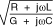
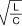
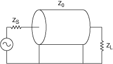
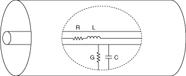
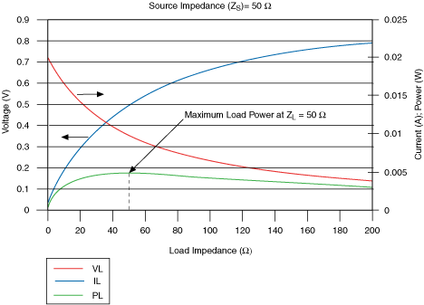

是频率（弧度/秒）
是频率（弧度/秒）特性阻抗是一个传输线参数，它决定了传播信号如何在线路中传输或反射。以下等式和图形表示特性阻抗的组成部分。
Z 0 = |  |
在哪里
Z 0是特性阻抗
L是每长度的电感
C是单位长度的电容
R是单位长度的电阻
G是单位长度的电导率
是频率（弧度/秒）
如果系统中有传输线，其特征阻抗还必须与源和负载匹配，以实现最大功率传输。
在理想的无损传输线中，没有串联电阻或介电损耗，如下式所示：
| R = 0 G = 0 | => | Z 0 = |  | （频率无关） |
下图为电气系统图
在哪里
Z s是源阻抗
Z 0是传输线的特性阻抗
Z L是负载阻抗
|  |
下图是传输线的电气表示，显示了影响特性阻抗的组件。
|  |
当两者具有相同的阻抗时，最大功率从源传输到负载。这显示在下图中，显示了在各种负载阻抗下传输的电压、电流和功率。该图假定没有传输线损耗和 50 欧姆的源阻抗。
|  |
 提交有关此主题的反馈。
提交有关此主题的反馈。 访问ni.com/support以获得技术支持。
访问ni.com/support以获得技术支持。